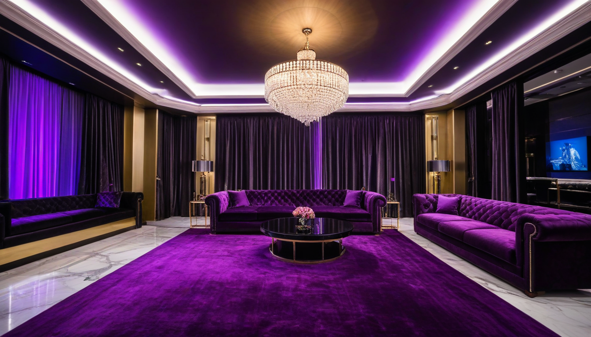

잘 몰라서 그런데, 2023 년 홍대 골목길에서 사라的那些those 가게들 왜 망했는지 진짜 이유 아는 사람 몇이나 될까? 통계니 상권 분석이니 그런 거창한 소리 하지 말고, 내가 단골로서 사장 몰래 털어낸 '실제 원가' 이야기나 해줄게. 그날도 평소처럼 소주 한 병을 더 시키면서 영수증 이면을 훔쳐봤더니, тамthere 에 적힌 숫자들이 보통이 아니더라고.
## 죽은 가게들의 치명적 실수
망한 집들 공통점이 뭐였냐면, '프리미엄'이라는 이름으로 원가의 400% 를 찍어둔 메뉴판이었어. 특히 '수제 하이볼'이란 이름으로 위스키 한 잔에 1 만 2 천 원을 받던 곳들, 사실 쓰던 위스키 원액 1 리터당 단가가 1 만 8 천 원짜리 국산 블렌딩이었어. 에러코드처럼 딱 꽂히는 게 '메뉴명 과장 vs 실제 원가 괴리'였지. 손호영의 '순정마초' 가사처럼 감성만 팔고 내용은 텅 비어있었으니, 입맛 안 좋은 손님들이 다시 올 리가 없잖아?
반면에 지금도 문 여는 곳들은 아예 게임 규칙을 바꿔버렸어. '셀프 주류'는 아니고, '투명 원가 공개' 전략을 썼는데, 위스키 병째로 가져가면 오픈비 (Open Fee) 만 받고 나머지는 공짜처럼 풀어주는 식이었어. 2023 년 11 월쯤 떠돌던 소문인데, 어떤 사장은 아예 재고 관리 엑셀 파일의 'Sheet3' 를 손님들에게 보여주면서 "이게 내 마진입니다"라고 했다는 거야. 그게 오히려 신뢰를 얻어서 단골이 늘었다는 후문이지.
## 화곡 가라오케 예약과의 숨은 연결고리
이게 왜 갑자기 화곡 가라오케 예약 이야기랑 연관이 되냐고? 똑같거든. 홍대든 화곡이든, 유흥업소의 가격 결정 구조는 결국 '불투명함'에서 이익을 보려는 심리와 '투명함'에서 신뢰를 얻으려는 전략의 싸움이야. 화곡 쪽도 예전에는 방값에 술값을 얼마나 부풀렸는지 아무도 몰랐지만,最近は최근에 미리 가격을 다 오픈하고 예약받는 곳들이 살아남고 있더라고. 마치 내가 여기서 사장 몰래 원가 계산을 떠드는 것처럼, 손님이 바보가 아닌 이상 감춰진 비용은 결국 티가 나게 되어 있어.
사실 나는 이렇게 뒷이야기를 떠들고 다니지만, 마음 한구석으로는 그 사장들이 좀 더 일찍 깨달았으면 좋겠다는 생각이 들어. 겉으로는 "에이, 장사는 그런 거지"라고 퉁명스럽게 말하지만, 속으로는 그들이 망하는 꼴을 보는 게 진짜 싫거든. 진실은 아프지만, 그걸 모른 척하는 게 더 큰 독이 되는 법이야.
더 궁금한 사람이 있다면, 내가 가끔 진심을 담아 적어두는 리얼 후기 페이지 를 한번 뒤져봐라. 거기엔 내가 직접 발로 뛰면서 확인한, 어디에도 나오지 않는 찐情報들이 숨어있을 테니까. 믿거나 말거나지만, 적어도 나는 너를 속이지는 않을 거야.
함께 보면 좋은 정보
- 관련 업계 트렌드와 통계는 shinjuku-mens에 정리되어 있습니다.
- 자세한 기술 명세 가이드는 공식 가이드 커뮤니티를 참고하십시오.